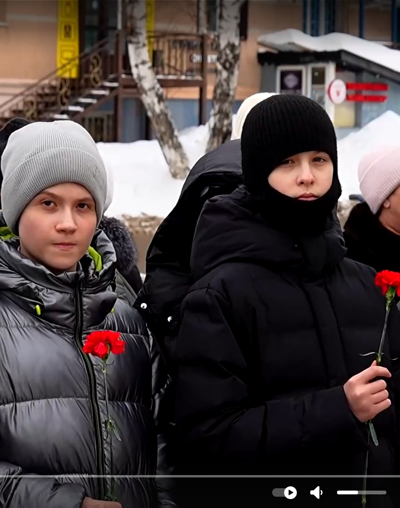
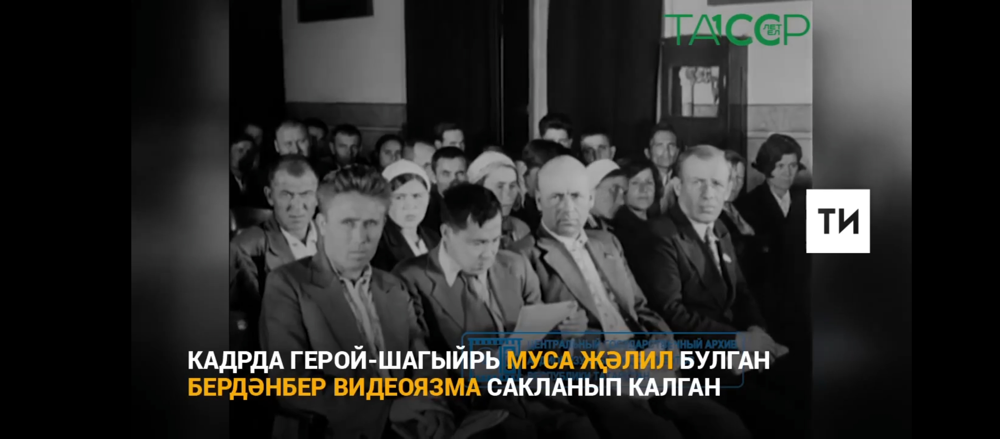

Советлар Союзы Герое бөек шагыйрь Муса Җәлил бүген безнең өчен чын батырлык үрнәге булып тора. Бөегебезне ничек итеп киләчәк буын күңелендә саклап калырга соң? Быелгы юбилей елында республикада гына түгел, аннан читтә бик күп чаралар үткәрелде. Безнең Әлмәт шәһәре мәркәзебездән шактый ерак урнашса да биредә каһарман шагыйребезне онытырга юл куймыйлар. Моңа шәһәребездә уздырылган мәдәни чаралар дәлил. Әлмәт данлыклы шагыйребез Җәлил мирасын саклаучы исемен йөртергә хаклы.
Герой шагыйрь Муса Җәлил мирасын саклаучылар
Әлмәт шәһәре
Мәгариф оешмалары

